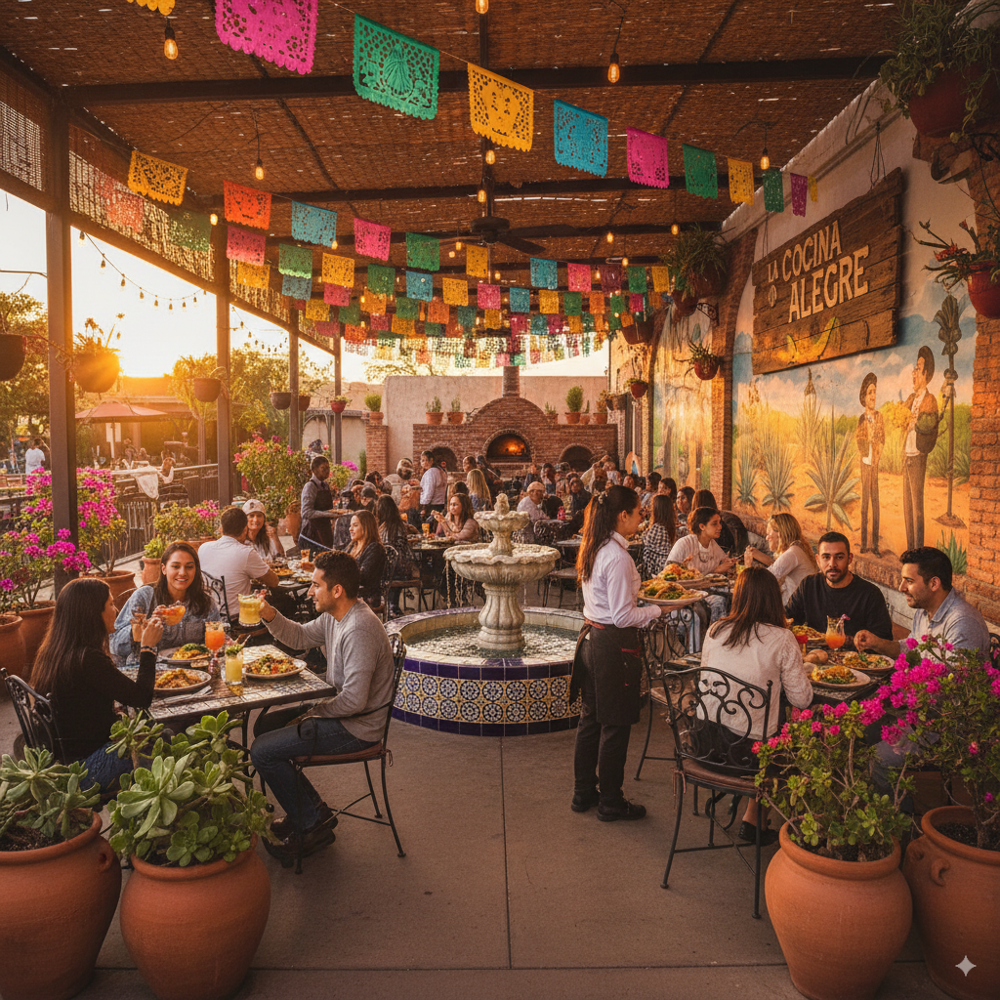

Kökschef
Sofia började sin karriär som kock på ett kryssningsfartyg i Karibien och fastnade för street food-kulturen. På restaurangen är hon hjärnan bakom alla nya tacokombinationer – från klassiska carnitas till mer experimentella varianter med svensk touch. Hon är känd för sin kompromisslösa hållning till råvaror och sin förmåga att hacka koriander snabbare än någon annan i köket.
Serveringsansvarig
Jonas är den där personen som får varje gäst att känna sig som en stamkund efter två minuter. Han började som bartender men blev snabbt restaurangens ansikte utåt. Hans specialitet är tabell-side guacamole, han kan göra den på under 60 sekunder med ögonkontakt och skämt samtidigt.
Diskare & kvälls-DJ
På dagtid ansvarar Amira för att hålla köket skinande rent. På kvällarna förvandlas hon till “DJ-Salsa” och styr spellistorna som ger restaurangen dess energi. Hon är känd för sin perfekta tajming: tallrikar ut, beats in. Hon studerar ljudproduktion på sidan om och ser restaurangen som sin scen.
Prep-kock & råvarulogistiker
Erik är uppvuxen på en gård i Värmland och tar sin kunskap om råvaror på största allvar. Han har byggt ett eget system för att se till att majsmjölet alltid är färskt och att köttleveranserna är punktliga. Kollegorna skämtar om att han älskar tortillapressen mer än sin bil, men ingen ifrågasätter hans fingertoppskänsla för perfekta tortillas.
